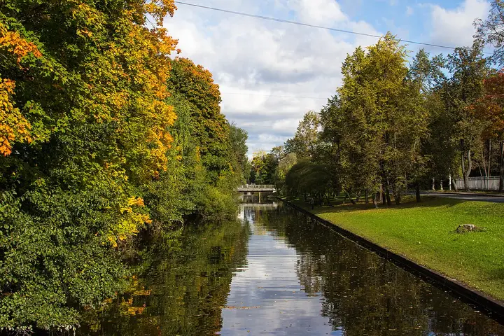
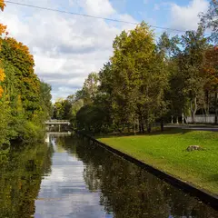

Фото: Alexey Komarov, CC BY 3.0 · Wikimedia Commons
Остров дач и особняков · Петроградская сторона
Каменный остров
Тихие аллеи вдоль протоков, деревянные и каменные дачи модерна и готическая церковь Иоанна Предтечи у моста. Особенно хорош осенью и тёплым вечером.
- ₽ · до 1 500 ₽ на человека
- Новое в каталоге
- в 1 плане
Позвать сюда: Каменный островОткрыть в каталоге: Каменный островМаршрут до места: Каменный остров
Адрес и детали
- Адрес
- Большая аллея, 10 (дача Свягина)
Открыть на Яндекс Картах (в новой вкладке) - Метро
- м. Чёрная речка
- Цена
- до 1 500 ₽ на человека
- Часы работы
- круглосуточно · проверили в ноябре 2026
- Проверено
- работает — проверили в ноябре 2026
Планы с этим местом 1

- Masters Bookstore · Книжный об искусстве и дизайне · м. Чкаловская
- 23 минуты пешкомКаменный остров · Остров дач и особняков
Альбомы и кофе в Masters на Барочной, потом тихие аллеи и деревянные дачи Каменного острова.
Открыть план: Книжный об искусстве и Каменный островПозвать сюда: Книжный об искусстве и Каменный остров
Фото: Alexey Komarov, CC BY 3.0 · Wikimedia Commons
Похожие рядом
Что ещё рядом

Как позвать
- Выбери план, место или событие — в карточке адрес, цены и маршрут в Яндекс Картах.
- Нажми «Позвать сюда» — соберётся приглашение-игра для свидания или голосование для компании.
- Отправь ссылку в любой мессенджер: тебе ответят, а компания отметит, куда и когда может. Бесплатно и без регистрации.